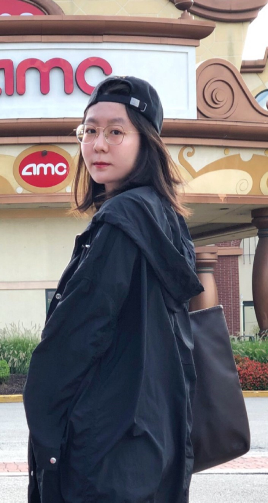

My name is Ma Chuqian. I come from Beijing, China. I studied in Beijing University of Technology and graduated in July 2018.
Now, I am studying in University of Pittsburgh, and my major is Information Science.
Because of my major in University, I learned to program in C, C++, Java, SQL, Html5, JavaSccript.
I became interested in Big Data Analytics due to my courses in university and my work experience in an E-commerce company.
Therefore, I changed my major to Information Science to gain a deeper understanding of this field.
My hobby is play instruments. I have been playing drums and piano since I was a child.
I have been participated in the orchestra of my school since junior school, and my position a drummer in percussion department.